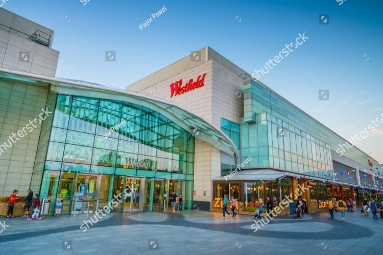

About Pine City Mall
Pine City Mall is a premier shopping destination located in Durban, South Africa. With over 100 stores, 20 eateries, and a variety of entertainment options, it offers a world-class experience for all visitors.
üõçÔ∏è Shopping
- Fashion: International brands like Zara and H&M, alongside local boutiques.
- Supermarkets: Makro, Game, and Checkers Hyper.
- Electronics: Leading tech stores offering the latest gadgets.
üçΩÔ∏è Dining
- Cafés & Restaurants: Mugg & Bean, Tashas, and more.
- Fast Food: Popular chains catering to quick bites.
üé¨ Entertainment
- Ster-Kinekor Cinemas: Featuring the latest blockbusters.
- IMAX Theatre: For an immersive movie experience.
üìç Location
Situated in the heart of Durban, Pine City Mall is easily accessible and offers ample parking for visitors.
